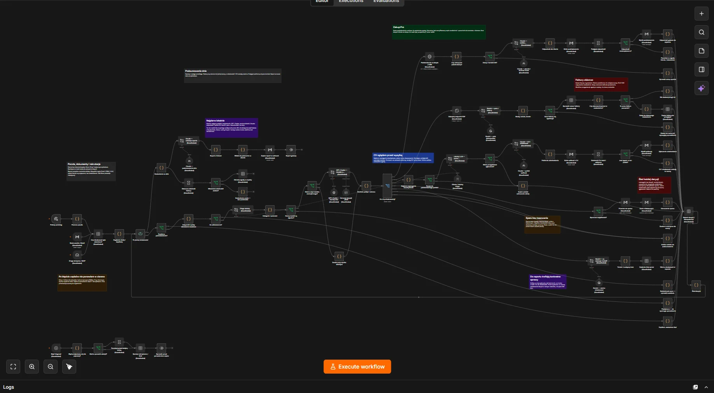
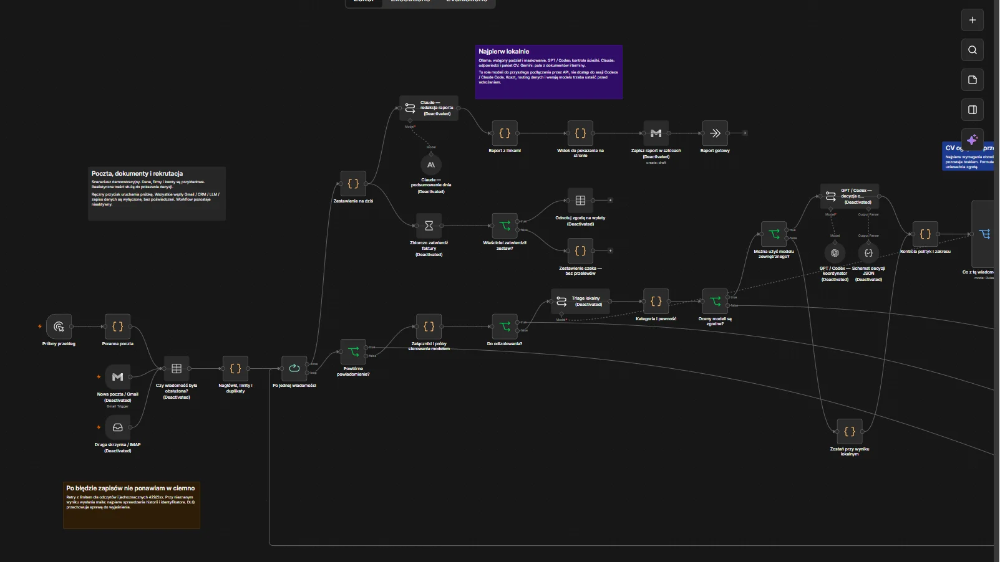
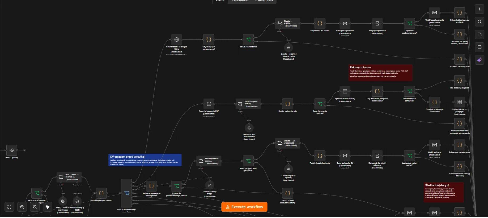
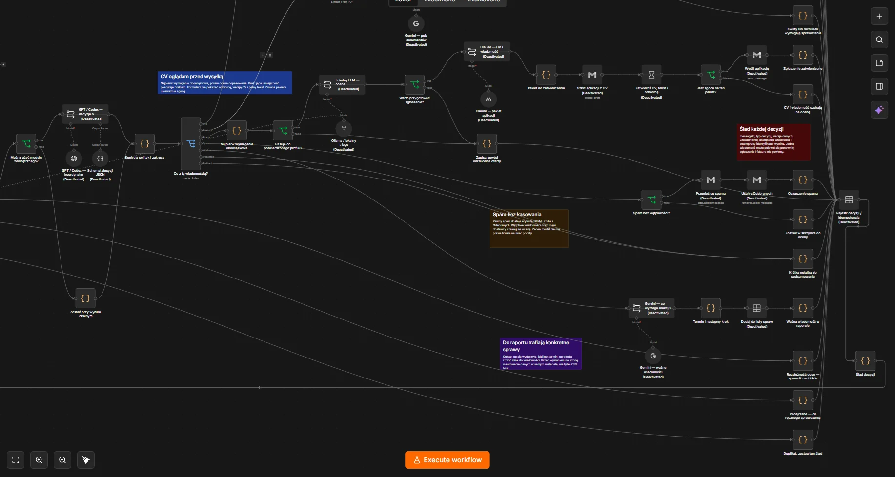

Poranna poczta rozłożona na decyzje.
Workflow czyta skrzynkę małego biura, rozpoznaje faktury, zamówienia, odpowiedzi rekrutacyjne, spam i sprawy z terminem. Przygotowuje odpowiedzi, zestawienia i raport. Wysyła dopiero to, co zatwierdzi człowiek.

Jedna skrzynka,
pięć różnych rodzajów pracy.
Faktura, zamówienie, ogłoszenie o pracę i wyłudzenie przychodzą tą samą drogą. Każde wymaga innej reakcji, a pomyłka kosztuje różnie: od zgubionego terminu po zapłacenie fałszywemu kontu.
Co boli w małym biurze
- Ta sama faktura przychodzi dwa razy i trafia dwa razy do zestawienia.
- „Przelew już wyszedł” w mailu bierze się za potwierdzenie wpłaty.
- Prośba o zmianę numeru konta przechodzi bez sprawdzenia.
- Ważny termin ginie między biuletynami.
- Model językowy dostaje treść, która próbuje nim sterować.
Co robi workflow
- Każda wiadomość dostaje jedną decyzję z uzasadnieniem.
- Pieniądze i wysyłki zawsze czekają na akceptację.
- Kwoty są liczone w groszach, osobno dla każdej waluty.
- Raport dnia zawiera konkretne sprawy z linkami do wiadomości.
- Każda decyzja zostawia ślad, więc ponowne uruchomienie nie dubluje pracy.
Scenariusz jest demonstracyjny: firmy, osoby i kwoty są zmyślone, adresy w domenie .example. Projekt nie deklaruje oszczędności czasu zmierzonej u klienta.
Zanim model cokolwiek przeczyta.
Najpierw tanie i pewne kontrole w kodzie. Model dostaje wiadomość dopiero po odsianiu duplikatów i podejrzanej treści.
Gmail, IMAP, ręcznie
Dwie skrzynki i przycisk próbnego przebiegu. Rejestr sprawdza, czy wiadomość była już obsłużona.
Nagłówki i limity
Duplikaty, rozmiar, załączniki. Powtórne powiadomienie zostawia tylko ślad.
Próby sterowania
Niebezpieczne załączniki i polecenia typu „ignore previous instructions” trafiają do ręcznego sprawdzenia.
Lokalnie, potem dalej
Ollama ustala kategorię i pewność. Gdy oceny modeli się różnią, decyduje człowiek.

Kiedy wiadomość może wyjść do modelu zewnętrznego?
Osobny węzeł sprawdza politykę: czy treść po maskowaniu nadaje się do wysłania poza komputer i czy koszt mieści się w limicie. Jeśli nie, workflow zostaje przy wyniku lokalnym. Wynik modelu musi pasować do schematu JSON decyzji, inaczej sprawa wraca do człowieka.
Dlaczego dwa modele oceniają to samo?
Rozbieżność jest sygnałem. W próbce wiadomość „Pilnie w sprawie współpracy” bez konkretów i z prośbą o podpisanie dokumentów dostała różne oceny, więc trafiła do osobistego sprawdzenia zamiast do automatycznej odpowiedzi.
Każdy model robi to,
w czym jest najmocniejszy.
Najpierw lokalnie, bo to tanie i nie wysyła danych. Modele w chmurze dostają tylko zadania, które tego wymagają.
Ollama
Wstępny podział, pewność kategorii, maskowanie danych, ranking ofert pracy. Działa na tym komputerze.
GPT / Codex
Koordynator: wybiera ścieżkę i zwraca decyzję zgodną ze schematem JSON.
Claude
Teksty: podziękowanie dla klienta, pakiet CV z wiadomością, redakcja raportu dnia.
Gemini
Pola z dokumentów PDF (kwota, waluta, termin) i wyłapywanie spraw wymagających reakcji.
Węzły modeli są w projekcie, ale wyłączone i bez kluczy. Przebieg demonstracyjny używa lokalnej symulacji ich odpowiedzi. Koszt, wersje modeli i trasę danych trzeba ustalić przed wdrożeniem.
Zamówienia, faktury, rekrutacja.
Zakup Pro
- Mail o wpłacie nie jest dowodem zapłaty.
- Zamówienie potwierdza sklep lub CRM.
- Sprawdzana jest zgoda na kontakt z klientem.
- Claude pisze krótkie podziękowanie, które przed wysłaniem zatwierdza właściciel.
- Brakujących danych klienta model nie „uzupełnia”.
Faktury zbiorczo
- Gemini czyta PDF: numer, kwota, waluta, termin.
- Kwoty w groszach, bez błędów zaokrągleń.
- Powtórzona faktura nie zwiększa sumy.
- PLN i EUR mają osobne zestawienia.
- Nowy numer rachunku idzie do weryfikacji.
- Workflow przygotowuje zgodę na wpłaty, nie zleca przelewów.
Oferty pracy
- Najpierw wymagania obowiązkowe, potem ocena dopasowania.
- Brakująca umiejętność zostaje brakiem, nikt jej nie dopisuje do CV.
- Akceptacja pokazuje odbiorcę, wersję CV i pełny tekst.
- Zmiana pakietu unieważnia wcześniejszą zgodę.
- Odrzucona oferta zapisuje powód.

Nic nie znika na zawsze.
Raport ma konkrety.
Spam bez kasowania
Pewny spam dostaje etykietę SPAM i znika z Odebranych. Wątpliwe wiadomości i znani dostawcy czekają na ocenę: w próbce przypomnienie o odnowieniu hostingu od istniejącego dostawcy nie trafiło do spamu, choć brzmiało jak sprzedaż. Żaden model nie może trwale usuwać poczty.
Raport dnia
Krótko: co się wydarzyło, jaki jest termin, co trzeba zrobić, link do wiadomości. Faktury jako jedno zestawienie do akceptacji, CV i odpowiedzi osobno. Raport zapisuje się jako szkic. Wersja publiczna ma dane zamaskowane w samym materiale, nie tylko rozmyte w CSS.

17 wiadomości, 17 decyzji.
Fikcyjna poranna poczta z jednego dnia. Tak workflow rozdzielił ją w przebiegu testowym.
| Temat wiadomości | Decyzja | Dlaczego |
|---|---|---|
| BlokerDanych Pro — zamówienie | podziękowanie | Zakup potwierdzony w sklepie, jest zgoda na kontakt. |
| Re: płatność za Pro | sprawdź ręcznie | „Przelew już wyszedł” bez zapisu w sklepie nie odblokowuje Pro. |
| Faktura FV/11/2026/*** — obsługa IT | zestawienie | 1349,00 PLN, do zbiorczej akceptacji. |
| Faktura za hosting — listopad | zestawienie | 349,00 PLN, do zbiorczej akceptacji. |
| Invoice 2026-*** — monitoring | zestawienie | 29,00 EUR, osobno od złotówek. |
| Ponownie: FV/11/2026/*** | duplikat | Ten sam numer faktury, suma się nie zmienia. |
| Nowy numer konta do faktury | weryfikacja | Zmiana rachunku to klasyczne wyłudzenie, potwierdzić telefonicznie. |
| Specjalista wsparcia IT L1 — praca zdalna | CV czeka | Pasuje do profilu; pakiet przygotowany, czeka na ocenę. |
| IT Support — zaproszenie do aplikowania | pakiet zatwierdzony | Wymagania spełnione, zgoda na ten konkretny pakiet. |
| Senior Cloud Engineer — Azure / Entra | odrzucona | Brak wymaganych umiejętności; powód zapisany, CV bez dopisków. |
| Ostatnia szansa na gwarantowany zysk | etykieta SPAM | Pewny spam, bez trwałego usuwania. |
| Przypomnienie o odnowieniu usługi | do oceny | Znany dostawca, więc nie trafia do spamu automatycznie. |
| Przerwa techniczna w nocy z soboty na niedzielę | raport | Termin i następny krok trafiają do raportu dnia. |
| Listopadowe wydanie biuletynu | notatka | Jedna linijka w podsumowaniu. |
| Pilne: nowy panel rozliczeń | izolacja | Treść próbuje sterować modelem i żąda dokumentów. |
| Pilnie w sprawie współpracy | do człowieka | Oceny modeli rozbieżne. |
| Re: BlokerDanych Pro — kopia powiadomienia | duplikat | Ta sama wiadomość drugi raz, zostaje tylko ślad. |
Błąd nie powtarza wysyłki.
Każda decyzja ma ślad.
Gdy coś się nie uda
- Ponowienie z limitem tylko dla odczytów i jednoznacznych błędów 429/5xx.
- Nieznany wynik wysłania maila: najpierw sprawdzenie historii i identyfikatora, dopiero potem decyzja.
- Sprawy, których nie da się wyjaśnić, czekają w kolejce zatrzymanych (DLQ).
Rejestr decyzji
- Zapisuje: identyfikator wiadomości, typ decyzji, wersję danych, uzasadnienie, akceptację właściciela i identyfikator wyniku.
- Wiadomość może przyjść drugi raz; zgłoszenie i faktura nie mogą zostać obsłużone drugi raz.
Przebieg w n8n zakończony powodzeniem. Automatyczne asercje potwierdziły wszystkie 17 decyzji, pominięcie duplikatów, osobne sumy PLN i EUR, maskowanie kontaktów w podglądzie publicznym, brak zapisanych poświadczeń i to, że workflow pozostaje nieaktywny.
Prawdziwych odpowiedzi modeli, poczty, sklepu ani CRM. Do wdrożenia potrzebne są: poświadczenia, limity kosztów, wybór wersji modeli, umowa powierzenia danych i test na kopii prawdziwej skrzynki.
Mój zakres
Dobór scenariuszy i reguł decyzji, projekt gałęzi i punktów akceptacji, przykładowe wiadomości, kryteria testu i ocena wyników. Implementacja wsparta narzędziami AI. n8n znam na etapie nauki.
Dla kogo
Biura rachunkowe, małe firmy usługowe, jednoosobowe działalności, które dostają kilkadziesiąt maili dziennie i chcą zacząć od podpowiedzi, a nie od automatycznych wysyłek.
3EN4ALL · Jacek Grodnicki · projekt demonstracyjny, stan opisu: 13 listopada 2026